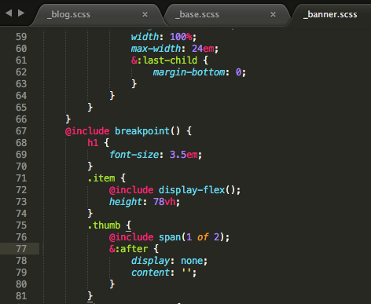

Description
Sublime Text est un éditeur de texte générique codé en C++ et Python.
Sublime Text est un éditeur de texte vraiment puissant. Disponible à la fois sur Windows, sur Mac et sur Linux, il est conçu pour prendre en charge plusieurs langages de programmation variés allant du langage de programmation C à l'Action Script en passant par les langages PHP, Objective-C ou encore OCaml voire même du Scripting comme le Shell Scripting ou encore le SQL.
Avantages et inconvénients
Ce qui fait réellement sa force est donc cette capacité à prendre en charge de nombreux langages mais aussi d'apporter de nombreuses fonctionnalités pratiques qui faciliteront la création de code pour les développeurs.
Le logiciel possède une barre de recherche très puissante, permettant de faire des recherches sur l'ensemble des fichiers du projet.
Il est possible d'installer des extensions pour obtenir des fonctionnalités supplémentaires.
Le design est personnalisable selon son envie. De nombreux thèmes de personnalisation sont téléchargeables en ligne.
Ce logiciel est payant (prix de la licence : $80 USD).
L'avis de la rédac'
Un très bon rapport qualité/prix pour ce logiciel très utilisé !Comment l'obtenir ?
Vous pouvez le télécharger ici. Vous pouvez le tester librement pendant une période d'évaluation.
Il sera ensuite nécessaire d'acheter une licence.